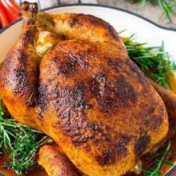

Easy Homemade Rotisserie Chicken

Recipe Description
Whether you have a rotisserie or want to bake it in the oven, this rotisserie chicken recipe is tender and juicy with crispy skin. If you love juicy and flavorful rotisserie chicken, make your own at home!
May your plates overflow with this awesomeness and your stomachs sing with fulfilling joy. All tummies arise and shine. With minimal prep work and your own fave seasonings, this is a go to for us!
Ingredients
- 1 small fryer chicken about 3.5 to4 lbs
- 1 tablespoon olive oil
- ½ teaspoon paprika
- ¼ teaspoon smoked paprika
- ½ teaspoon garlic powder
- ½ teaspoon onion powder
- salt & pepper to taste
- In a small bowl, combine paprika, smoked paprika, garlic powder, onion powder. Add 1 teaspoon salt and ½ teaspoon pepper (more or less to taste) and mix well.
- To prepare the chicken, dab the skin dry with paper towels.
- Rub the outside of the chicken with olive oil and season generously with the spice mixture.
- Gently fold the wings behind the chicken. Using kitchen twine, tie the legs together. Ensure the cavity is empty.